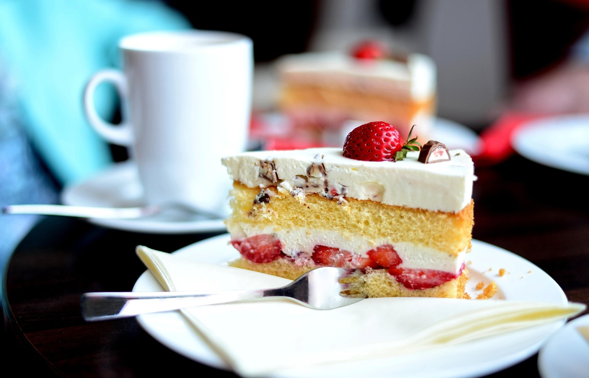

Erdbeerkuchen
- Für den Boden:
- 125 g Zucker
- ½ Pck. Vanillezucker
- 2 Eier
- 60 ml Öl
- 75 ml Orangenlimonade
- 125 g Mehl
- 1 ½ TL, gehäuft Backpulver
- Für den Belag:
- 300 ml Sahne
- 200 ml Schmand
- 1 Pck. Vanillezucker
- 1 Pck. Cremepulver (Paradiescreme Vanille)
- ¾ kg Erdbeeren
- ½ Pck. Tortenguss rot
- n. B. Wasser
Zubereitung
- Die Mengen in der Zutatenliste sind für eine 26er Springform. Für ein Blech die Zutaten verdoppeln.
- Für den Boden die Eier mit dem Zucker und dem Vanillezucker verrühren. Öl, Orangenlimonade, Mehl und Backpulver hinzufügen. Den Teig in der mit Backpapier ausgelegten Springform verteilen und bei 180 °C Ober-/Unterhitze im vorgeheizten Ofen 25 Minuten backen.
- Für den Belag die Sahne mit dem Cremepulver und Vanillezucker 3 Minuten schlagen (die Masse wird relativ fest). Den Schmand unterheben und die Vanillecreme auf den erkalteten Boden streichen.
- Die gewaschenen und entstielten Erdbeeren (große sollten halbiert werden) auf der Vanillecreme verteilen. Den Tortenguss nach Packungsanweisung mit dem Wasser anrühren, kochen und anschließend über den Erdbeeren verteilen. Fest werden lassen und dann ist der Kuchen servierfertig.
Rezept erstellt von
 Marcel
Marcel